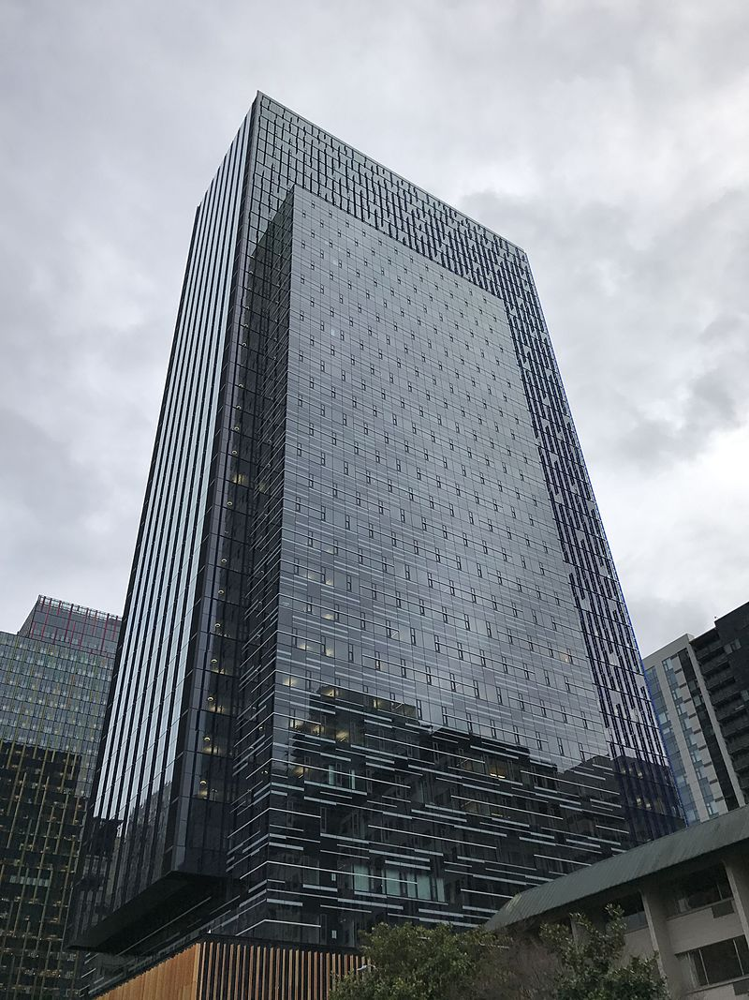
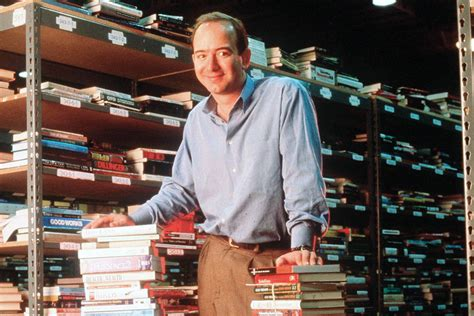
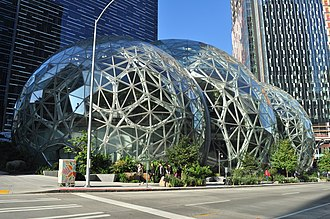

The Brand
Amazon.com, is an American multinational technology company based in Seattle that focuses on e-commerce, cloud computing, digital streaming, and artificial intelligence.
It is considered one of the Big Four technology companies, along with Google, Apple, and Facebook.
It has been referred to as "one of the most influential economic and cultural forces in the world" as well as the world's most valuable brand.
Amazon is known for its disruption of well-established industries through technological innovation and mass scale.It is the world's largest online marketplace, AI assistant provider, live-streaming platform and cloud computing platformas measured by revenue and market capitalization.
Amazon is the largest Internet company by revenue in the world.
It is the second largest private employer in the United States and one of the world's most valuable companies.
First headquaters

How it all started
July 5,1994

Born in 1964 in New Mexico, Bezos had an early love of computers and studied computer science and electrical engineering at Princeton University.
After graduation, he worked on Wall Street, and in 1990 he became the youngest senior vice president at the investment firm D.E. Shaw.
Four years later, Bezos quit his lucrative job to open Amazon.com, an online bookstore that became one of the Internet's biggest success stories. In 2013, Bezos purchased The Washington Post, and in 2017 Amazon acquired Whole Foods.
Company right now-
the headquaters..
